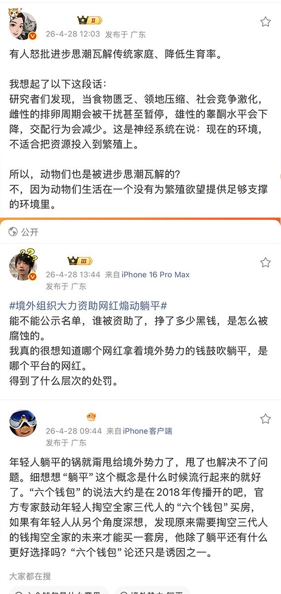
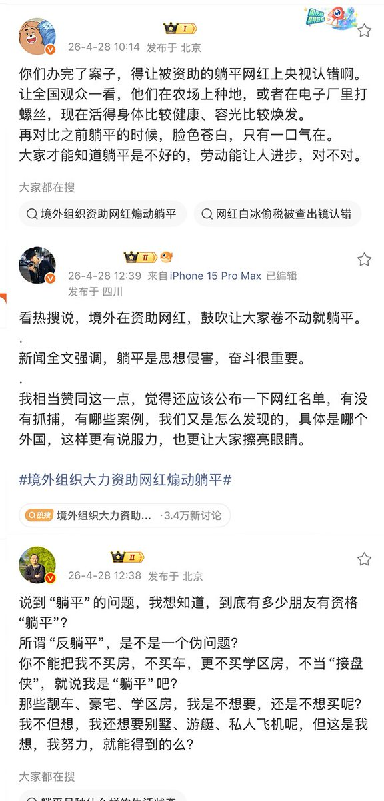
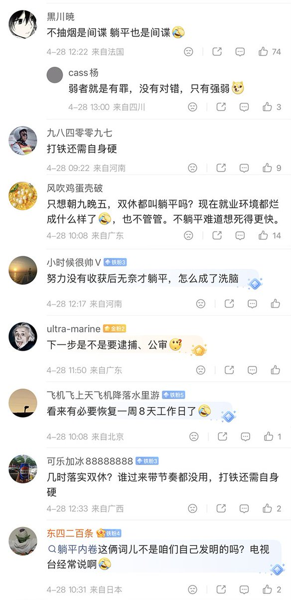
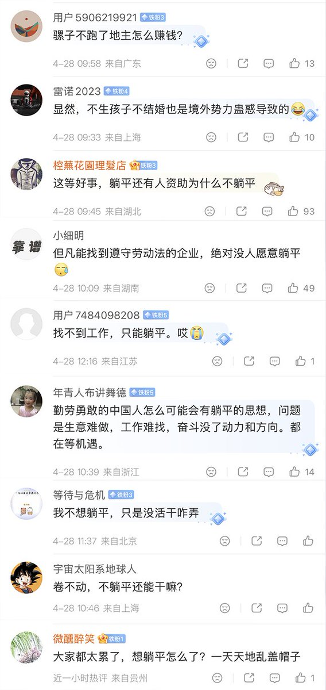

1713✝️
@sss_1713
终于快进到了什么都不干也会犯错的时代了✋✋😭🤚🤚




李老师不是你老师
@whyyoutouzhele
4月28日，中国国安部发布“重磅”内容，将近年来在抖音，快手上爆火的“躺平”系主播，定性为被境外势力支持的群体。
对此，国内网民们在评论区留言表示：“因为动物们生活在一个没有为繁殖欲望提供足够支撑的环境里”
“能不能公示名单，哪个网红被资助了，挣了多少黑钱，是怎么被腐蚀的？” https://t.co/4Cx1jJ1wB3 https://t.co/N1ulJLvSxq